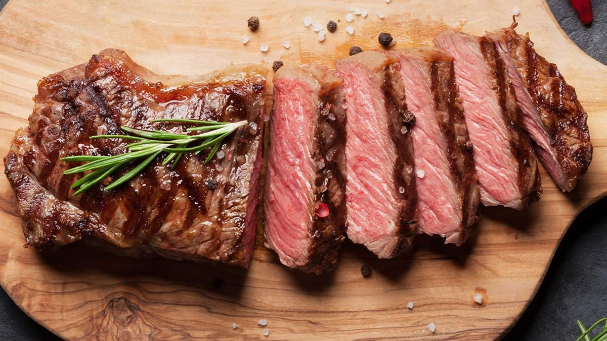

Steak Recipes

Description
This Pan-Seared Steak has a garlic rosemary-infused butter that makes it taste steakhouse quality. You’ll be impressed at how easy it is to make the perfect steak – seared and caramelized on the outside, and so juicy inside.
Thank you to Beef.It’s What’s for Dinner. on behalf of the Beef Checkoff for sponsoring this garlic butter steak recipe. I received compensation, but all opinions are my own.
Ingredients
- 2 tablespoons butter, softened, divided
- 1 teaspoon minced fresh parsley
- 1/2 teaspoon minced garlic
- 1/4 teaspoon reduced-sodium soy sauce
- 1 beef flat iron steak or boneless top sirloin steak (3/4 pound)
- 1/8 teaspoon salt
- 1/8 teaspoon pepper
Steps
- Mix 1 tablespoon butter with parsley, garlic and soy sauce.
- Sprinkle steak with salt and pepper. In a large skillet, heat remaining butter over medium heat. Add steak; cook until meat reaches desired doneness (for medium-rare, a thermometer should read 135°; medium, 140°; medium-well, 145°), 4-7 minutes per side. Serve with garlic butter.
Home